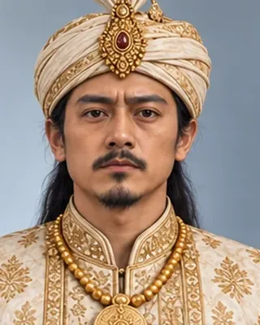
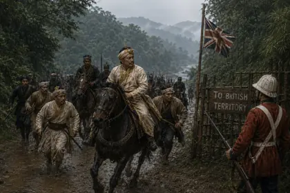
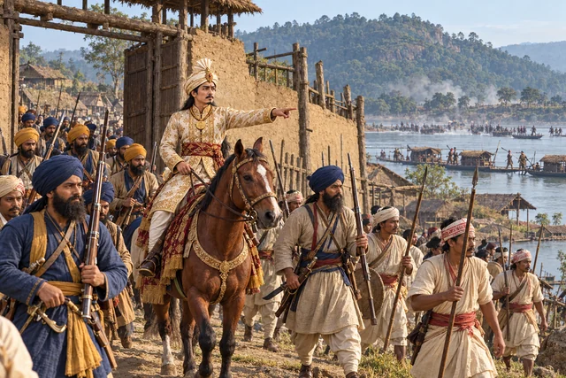

1814–1816
চন্দ্ৰকান্ত সিংহ
1811–1818, 1819–1821 · Thirty-seventh Ahom king

Named king at about fourteen by Purnananda Burhagohain. Deposed in 1818, reinstalled by the Burmese in 1819, defeated in 1822 and fled to British territory. Died in Guwahati in 1839.
Born c. 1797. After Yandabo he received a pension of 500 rupees.
Record confidence: high.
1814–1816

March 1817

August 1817

February 1818

1819

1821

October–December 1821

March–April 1822

June–July 1822